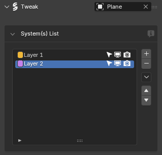
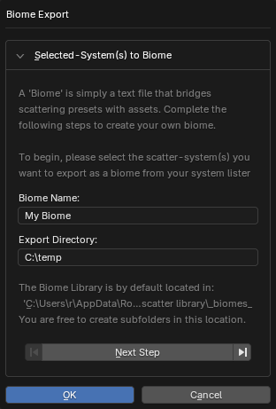
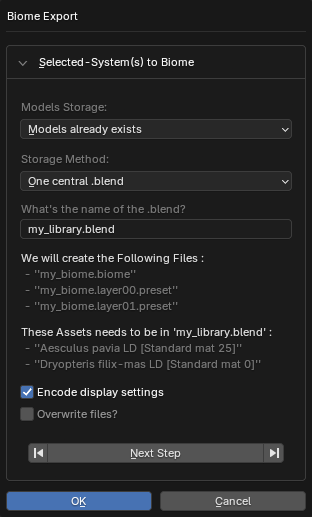
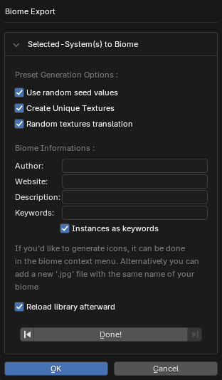
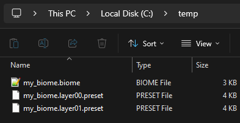
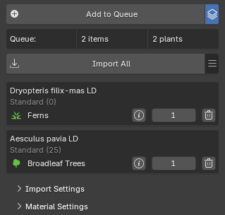
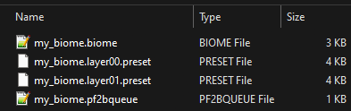
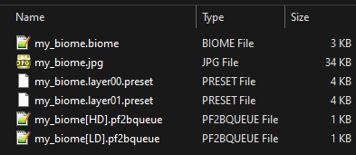

Create your own biome
If you want to contribute biomes to PF2B, here is some important information and a set of guidelines to follow.
Guidelines: PF2B¶
Plant Selection¶
-
Only plants from the PlantCatalog Library are supported.
-
You are free to build your biome using HD, LD, or RT plants, or a mix of all three. However, try to lean toward one detail level so that an opposite version can later be created with a higher or lower poly count.
-
Import overrides are not supported. Please use only the existing presets.
Other Objects
You can include additional non-PF2B objects such as rocks or other environmental elements. These can be included from Polyhaven.com or other CC0 asset sources.
For each detail level, these assets are stored in dedicated blend files provided with the add-on:
pf2b-biome_Other[HD].blendfor HD assets (typically using 4K textures)pf2b-biome_Other[LD].blendfor LD assets (typically using 2K textures)
To include these assets in your biome:
- Add your objects to the appropriate Other blend file (
pf2b-biome_Other[HD].blendorpf2b-biome_Other[LD].blend). These files are located in the folder defined underPreferences > Plant Library > Biomes & Collections > Blend Storage. - In your biome, place instances of these objects on a separate layer named according to the asset type and detail level, for example:
Rocks [HD]Rocks [LD]
- PF will automatically detect these layers and link them to the correct asset file for that detail level during the build.
Currently supported non-PF2B layer names: Rocks
Plant Detail Levels¶
❌ Not Allowed
-
Same Plant, Different Detail Levels:
A biome must not mix multiple detail levels (e.g., RT, LD, HD) of the same plant.Why?
- In some cases (same preset), this won't work at all because the build process will fail when PF2B tries to match the plant definitions.
- In other cases (different presets), it will technically import, but causes material merging issues. For example, if the Low Detail version uses a leaf material called
XXXand the High Detail version also usesXXX(but with higher texture resolution), PF2B will merge them into a single material during import. As a result, both variants will use whichever material was imported first. Since the UV maps for the Low Detail and High Detail versions of the leaves are often different, the textures will be mapped incorrectly, making the leaves look wrong.
✅ Allowed
- Mixing Different Plants:
It is encouraged to mix different detail levels across different plants within a biome.- Even in a "Low Detail" biome, not every plant needs to be from the "LD" category, just the majority.
- The same applies to "High Detail" biomes.
Plant Naming¶
When creating the biome with PF2B plants always use the following settings for plant naming:
- English Name
- Preset
- Detail Level
- Enable User Group Wrapper and select Brackets
[]as wrappers and pipe|as the divider. - Enable Add Spaces Between Elements
If you follow the above steps, the result should look like this: PlantName [Preset|Detail-Level], example: Reed Canary Grass [Wild H100 S20|HD].
If you accidentally imported plants with the wrong naming scheme and don't want to re-import them just to change the names, use the Plant Renamer utility.
Guidelines: Geo-Scatter¶
As the artist, you can decide how to build the biome and configure its settings. As a general guideline, the following settings should be adjusted for each layer:
- Density
- Rotation
- Align Normal
- Random Rotation
- Scale
- Default Scale
- Random Scale
- Pattern
- Display: Set up the display solution.
Creating the Biome¶
After you have finished creating your biome inside Blender using Geo-Scatter, follow the instructions below.
-
Export the biome from Geo-Scatter:

For example, via the
System(s) Listusing the icon. Important: Make sure to select all of the layers. -
Choose a name and note the save location

-
Set the storage options

- Under Models Storage, select
Models already exists. - For Storage Method, choose
One central .blend. - The What's the name of the .blend? field can be left as is; PF2B will overwrite it when building the biome.
- Enable Encode display settings
- Under Models Storage, select
-
Biome Options

- Preset Generation Options: Tick all the available options.
- Fill in the Biome Informations section with your details.
- The
Instances as keywordsoption is optional.
- The
-
Verify exported files
After the export, you should have a structure similar to this:

Now continue with the Creation of Queue files
-
Create Queue files
Select whether to automatically generate these files or create them manually for finer control.
Use the Create Queue files tool inside
Preferences > Plant Library > Biomes & Collections > Biome Contributor Tools. This tool lets you select a.biomefile and generate one or more.pf2bqueuefiles.Note
This tool creates new files; it does not modify the original
.biomefile.Tool options
- Create:
- HD & LD variants:
Generates two queue files from your Biome: one for HD and one for LD. All plants in the Biome will be adjusted so their detail level matches the selected file (HD or LD). This lets you quickly create both variants without manually duplicating or editing the files. Use theLock RT Detail Levelsetting to keep RT detail-level plants unchanged, preventing them from being replaced by LD or HD versions. - Keep as is:
Keeps the exact detail levels defined in your Biome file when creating the queue file. This is useful if your Biome contains a mix of detail levels and you want precise control. After saving the queue, you will need to manually create additional detail-level files by duplicating and adjusting the generated file. When selecting this option, you must specify whether the source biome file is HD or LD.
- HD & LD variants:
Choosing your workflow:
-
If you want your biomes strictly as either HD or LD, choose Create HD & LD variants.
-
If you have mixed detail levels and want granular control, select Keep as is. The next section, Creating additional queue files for different detail levels, explains how to handle mixed-detail biomes.
-
If you choose HD & LD variants, you can skip the additional queue files section.
If you used the queue feature when creating the biome and still have the plants in your queue, you can export them as a
.pf2bqueuefile via the menu by selecting Save Queue.
Save the queue file to the same directory as your biome and name it the same as your biome, for example:
my_biome.pf2bqueue.If you did not use the queue system, select all plants in your scene used by the biome, then use the same menu and choose Add Selected to Queue. After that, use Save Queue to generate the file.
Now your biome folder will look something like:

- Create:
-
Creating additional queue files for different detail levels
Note
This section is only relevant if you used Keep as is in automatic creation or the Manual creation workflow.
Instructions
PF2B looks for two queue files in a biome folder: one for HD (High Detail) and one for LD (Low Detail). These files are expected to follow this naming convention:
my_biome[HD].pf2bqueuemy_biome[LD].pf2bqueue
Tip
A queue file labeled as LD or HD does not need to contain only plants of that detail level. As a rule of thumb, the majority of plants should match the file’s detail level, but mixing different detail levels across individual plants is encouraged.
-
If you exported the queue manually and the file name does not include the detail level, rename it to indicate the detail level of the plants it contains. For example, if the file contains mostly LD plants:
my_biome.pf2bqueue→my_biome[LD].pf2bqueue. -
To create the HD version, copy the LD queue file and rename it:
my_biome[HD].pf2bqueue.Then, open the file in a text editor and update the
plant_name,plant_detail, andplant_pathvalues by replacing LD with HD as needed. You are encouraged to adjust and mix detail levels across plants to suit your biome, creating a custom balance of HD and LD plants. If you do not need mixed detail levels and prefer a strict HD or LD variant, it is recommended to use the automatic workflow instead.Example LD and HD queue files for reference; you can adjust detail levels as needed:
[ { "main_category": "PlantCatalog", "plant_name": "Aesculus pavia LD", "plant_type": "Broadleaf Trees", "plant_detail": "LD", "plant_path": "PlantCatalog\\Broadleaf Trees\\Aesculus pavia LD.tpf", "preset_name": "Standard mat 25", "preset_display_name": "Standard (25)", "preset_number": 1, "quantity": 1 }, { "main_category": "PlantCatalog", "plant_name": "Dryopteris filix-mas LD", "plant_type": "Ferns", "plant_detail": "LD", "plant_path": "PlantCatalog\\Ferns\\Dryopteris filix-mas LD.tpf", "preset_name": "Standard mat 0", "preset_display_name": "Standard (0)", "preset_number": 0, "quantity": 1 } ][ { "main_category": "PlantCatalog", "plant_name": "Aesculus pavia HD", "plant_type": "Broadleaf Trees", "plant_detail": "HD", "plant_path": "PlantCatalog\\Broadleaf Trees\\Aesculus pavia HD.tpf", "preset_name": "Standard mat 25", "preset_display_name": "Standard (25)", "preset_number": 1, "quantity": 1 }, { "main_category": "PlantCatalog", "plant_name": "Dryopteris filix-mas HD", "plant_type": "Ferns", "plant_detail": "HD", "plant_path": "PlantCatalog\\Ferns\\Dryopteris filix-mas HD.tpf", "preset_name": "Standard mat 0", "preset_display_name": "Standard (0)", "preset_number": 0, "quantity": 1 } ]
-
Queue files ready
So now you should have both
my_biome[LD].pf2bqueueandmy_biome[HD].pf2bqueuein the folder.Now continue with the Finishing Touches
-
Render an image for the biome and place it inside the biome folder.
- File format: jpg
- Suggested image size: 500x500 pixels
- File name: same as your biome, e.g.,
my_biome.jpg
The image below shows the final biome folder structure, including the rendered image and queue files, as they should appear.

-
Testing the biome
To test your biome in PF2B:
-
Create a new folder in the following path:
%USERPROFILE%\AppData\Roaming\Blender Foundation\Blender\4.5\extensions\user_default\pf2b\biomesTip
You can quickly open this folder by going to
PF2B Preferences > Plant Library > Biomesand enabling theBiome Contributor Tools, which will display additional buttons such as Open Internal PF2B Biome Folder. -
The root folder contains biome categories, such as
coniferous.- You can place your biome in an existing category or create a new one.
- The folder for your biome must be named exactly the same as your biome, e.g.,
my_biome.
This will allow PF2B to recognize and load your custom biome properly. Once it's detected, you can try the Build Biome button, and afterwards go to
Geo-Scatter > Biome Scatter > Open Biomesto test the biome in action. -
Understanding Biome Builds¶
PF2B uses the .pf2bqueue file as the Master Record, so to speak. It dictates which plants are exported into the biome.
During the build process, PF2B uses the plant name and preset name to cross-check which plants should go inside the biome. This means you can switch plant detail levels in the queue file without needing to manually create multiple biome versions. A single biome file is sufficient.
For example, even if you build your biome with [LD] plants, you can easily switch the detail levels as shown above, and it will still work. PF2B automatically modifies all of the necessary fields inside the .biome file during the build so that everything works correctly.
However, please note that you cannot change the plants or presets themselves, only the detail levels!
More Details
Here's an example of what happens to the .biome file during processing:
Raw output directly from Geo-Scatter after exporting a biome (different example than shown in the guide above):
This block represents one layer inside the .biome file
"asset_file": "my_library",
"instances": [
"Hong Kong Orchid Tree [Standard mat 0|HD]",
"Dead Lodgepole Pine [Standard 1a mat 0|HD]",
"Mountain Hemlock [Standard mat 0|HD]"
]
During Build Biome, PF2B transforms this into:
"asset_file": "INSTANCES_DEFINED",
"instances": [
[
"Hong Kong Orchid Tree [Standard mat 0|LD]",
"pf2b-biome_Broadleaf_Trees[LD]"
],
[
"Dead Lodgepole Pine [Standard 1a mat 0|LD]",
"pf2b-biome_Coniferous[LD]"
],
[
"Mountain Hemlock [Standard mat 0|HD]",
"pf2b-biome_Coniferous[HD]"
]
]
PF2B automatically:
- Identifies the plant type
- Points it to the correct
.blendfile - Adjusts detail levels where necessary